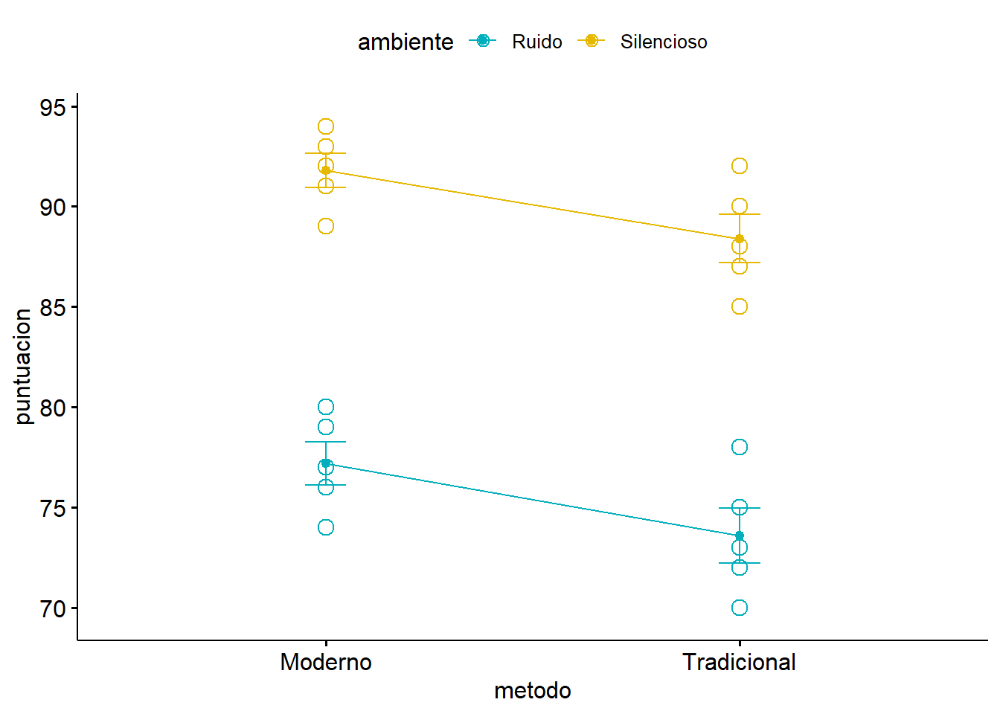
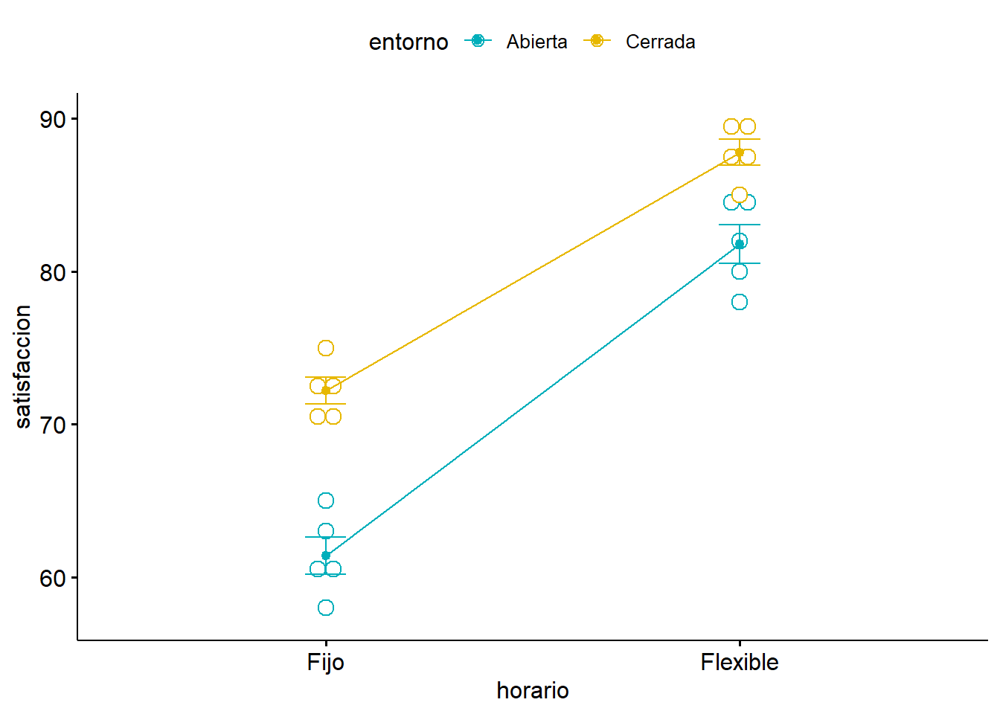
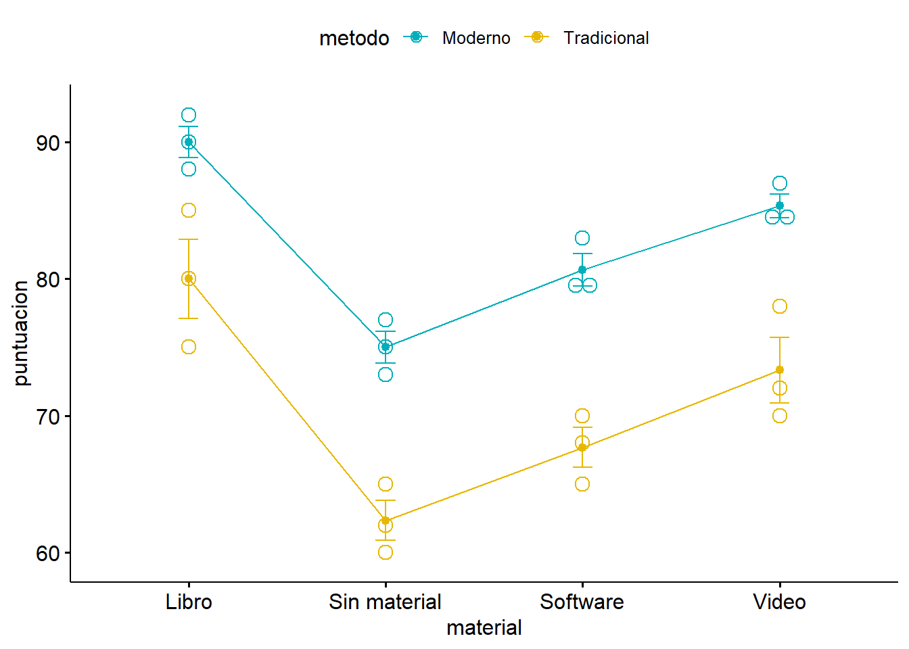

Se realizó un experimento para investigar si hay diferencias significativas en el tiempo de reacción ante un estímulo visual entre tres grupos de participantes que fueron sometidos a diferentes niveles de iluminación: normal, baja y alta. Se registraron los tiempos de reacción (en milisegundos) para cada participante en cada grupo. Los datos obtenidos se muestran a continuación:
Grupo Normal: 40, 45, 38, 42, 39 Grupo Baja: 48, 50, 55, 52, 51 Grupo Alta: 35, 37, 32, 40, 36
Usando un nivel de significancia de 0.05, ¿hay diferencias significativas en el tiempo de reacción entre los tres grupos?
Solución: Para determinar si hay diferencias significativas en el tiempo de reacción entre los tres grupos, podemos utilizar un análisis de varianza (ANOVA) de un factor. Aquí están los pasos para realizar el ANOVA:
\[ df_{\text{Total}} = N - 1 =15-1=14\]\[ df_{\text{Grupos}} = k - 1 =3-1=2\]\[ df_{\text{Dentro de grupos}} = N - k =15-3=12\]
Donde \(N\) es el número total de observaciones y \(k\) es el número de grupos.
Paso 7: Calcular la estadística de prueba \(F\).
\[ F = \frac{MSG}{MSE} \]
Donde \(MSG = \frac{SSB}{df_{\text{Grupos}}}\) y \(MSE = \frac{SSW}{df_{\text{Dentro de grupos}}}\).
De modo que:
\[ F = \frac{603.73/2}{91.6/12} \approx 39.5 \]
Paso 8: Realizar la prueba de hipótesis.
Hipótesis nula (\(H_0\)): No hay diferencias significativas entre los grupos (\(\mu_1 = \mu_2 = \mu_3\)).
Hipótesis alternativa (\(H_1\)): Hay diferencias significativas entre los grupos.
Para \(\alpha = 0.05\) y los grados de libertad \(df_{\text{Grupos}} = 2\) y \(df_{\text{Dentro de grupos}} = 12\), el valor crítico de la distribución \(F\) es aproximadamente \(F_{\text{crítico}} = 3.89\).
Por tanto, dado que \(F > F_{\text{crítico}}\), rechazamos la hipótesis nula y concluimos que hay diferencias significativas entre los grupos.
La tabla ANOVA queda como sigue:
Fuente de variación
Suma de cuadrados
Grados de libertad
Cuadrado Medio
F
Pr(>F)
Entre grupos
603.7
2
301.9
39.55
<0.001
Residual
91.6
12
7.63
Total
695.3
14
Ejercicio 2
Un investigador quiere evaluar el efecto de dos factores en el rendimiento de los estudiantes URJC en un examen final. Los dos factores considerados son el tipo de método de estudio (Método Tradicional y Método Moderno) y el ambiente de estudio (Ambiente Silencioso y Ambiente con Ruido). Para ello, se seleccionan 5 estudiantes aleatoriamente para cada combinación de métodos y ambientes, y se registra su puntuación en el examen final.
Los datos obtenidos se muestran en la siguiente tabla:
Ambiente / Método
Método Tradicional
Método Moderno
Silencioso
85, 90, 88, 92, 87
91, 93, 89, 94, 92
Con Ruido
70, 75, 72, 78, 73
77, 79, 74, 80, 76
Utilizando un nivel de significancia de 0.05, determine si hay diferencias significativas en las puntuaciones del examen debido al tipo de método de estudio, al ambiente de estudio, y a la interacción entre ambos factores.
Solución: Para resolver el problema anterior utilizando R, se puede seguir el siguiente procedimiento paso a paso. A continuación se presentan los comandos necesarios y sus salidas correspondientes:
Ingresar los datos:
### Datos de las puntuacionessilencioso_tradicional <-c(85, 90, 88, 92, 87)silencioso_moderno <-c(91, 93, 89, 94, 92)ruido_tradicional <-c(70, 75, 72, 78, 73)ruido_moderno <-c(77, 79, 74, 80, 76)### Crear un data framedata <-data.frame(puntuacion =c(silencioso_tradicional, silencioso_moderno, ruido_tradicional, ruido_moderno),metodo =factor(rep(c("Tradicional", "Moderno"), each =5, times =2)),ambiente =factor(rep(c("Silencioso", "Ruido"), each =10)))### Visualizar el data frameprint(data)
puntuacion metodo ambiente
1 85 Tradicional Silencioso
2 90 Tradicional Silencioso
3 88 Tradicional Silencioso
4 92 Tradicional Silencioso
5 87 Tradicional Silencioso
6 91 Moderno Silencioso
7 93 Moderno Silencioso
8 89 Moderno Silencioso
9 94 Moderno Silencioso
10 92 Moderno Silencioso
11 70 Tradicional Ruido
12 75 Tradicional Ruido
13 72 Tradicional Ruido
14 78 Tradicional Ruido
15 73 Tradicional Ruido
16 77 Moderno Ruido
17 79 Moderno Ruido
18 74 Moderno Ruido
19 80 Moderno Ruido
20 76 Moderno Ruido
### Visualizamos las interaccioneslibrary("ggpubr")
Loading required package: ggplot2
ggline(data, x ="metodo", y ="puntuacion", color ="ambiente",add =c("mean_se", "dotplot"),palette =c("#00AFBB", "#E7B800"))
Bin width defaults to 1/30 of the range of the data. Pick better value with
`binwidth`.

Realizar el ANOVA de dos factores:
### Realizar el ANOVA de dos factoresanova_result <-aov(puntuacion ~ metodo * ambiente, data = data)summary(anova_result)
Df Sum Sq Mean Sq F value Pr(>F)
metodo 1 61.3 61.3 9.423 0.00733 **
ambiente 1 1080.4 1080.4 166.223 7.23e-10 ***
metodo:ambiente 1 0.0 0.0 0.008 0.93120
Residuals 16 104.0 6.5
---
Signif. codes: 0 '***' 0.001 '**' 0.01 '*' 0.05 '.' 0.1 ' ' 1
Interpretar los resultados:
Método: El valor \(p\) (Pr(>F)) para el método es \(0.00733\), que es menor que 0.05, indicando que hay una diferencia significativa en las puntuaciones del examen debida al tipo de método de estudio.
Ambiente: El valor \(p\) (Pr(>F)) para el ambiente es \(7.23e-10\), que es mucho menor que 0.05, indicando que hay una diferencia significativa en las puntuaciones del examen debida al ambiente de estudio.
Interacción: El valor \(p\) (Pr(>F)) para la interacción es \(0.93120\), que es mayor que 0.05, indicando que no hay una interacción significativa entre el método de estudio y el ambiente de estudio.
Por lo tanto, podemos concluir que tanto el método de estudio como el ambiente de estudio tienen un efecto significativo en las puntuaciones del examen, pero no hay una interacción significativa entre estos dos factores.
Ejercicio 3
Un equipo de investigadores quiere evaluar el efecto de dos factores en la satisfacción laboral de los empleados. Los dos factores considerados son el tipo de horario de trabajo (Horario Flexible y Horario Fijo) y el tipo de entorno de trabajo (Oficina Abierta y Oficina Cerrada). Se seleccionan 5 empleados aleatoriamente para cada combinación de horarios y entornos, y se registra su puntuación de satisfacción laboral en una escala de 1 a 100.
Los datos obtenidos se muestran en la siguiente tabla:
Entorno / Horario
Horario Flexible
Horario Fijo
Oficina Abierta
78, 82, 85, 80, 84
60, 65, 58, 63, 61
Oficina Cerrada
88, 90, 87, 85, 89
70, 73, 75, 72, 71
Utilizando un nivel de significancia de 0.05, determine si hay diferencias significativas en la satisfacción laboral debido al tipo de horario de trabajo, al entorno de trabajo, y a la interacción entre ambos factores.
Solución:
Ingresar los datos:
### Datos de las puntuacionesabierta_flexible <-c(78, 82, 85, 80, 84)abierta_fija <-c(60, 65, 58, 63, 61)cerrada_flexible <-c(88, 90, 87, 85, 89)cerrada_fija <-c(70, 73, 75, 72, 71)### Crear un data framedata <-data.frame(satisfaccion =c(abierta_flexible, abierta_fija, cerrada_flexible, cerrada_fija),horario =factor(rep(c("Flexible", "Fijo"), each =5, times =2)),entorno =factor(rep(c("Abierta", "Cerrada"), each =10)))### Visualizar el data frameprint(data)
### Visualizamos las interaccioneslibrary("ggpubr")ggline(data, x ="horario", y ="satisfaccion", color ="entorno",add =c("mean_se", "dotplot"),palette =c("#00AFBB", "#E7B800"))
Bin width defaults to 1/30 of the range of the data. Pick better value with
`binwidth`.

Realizar el ANOVA de dos factores:
### Realizar el ANOVA de dos factoresanova_result <-aov(satisfaccion ~ horario * entorno, data = data)summary(anova_result)
Horario: El valor $ p $ (Pr(>F)) para el horario es \(1.35e-11\), que es menor que 0.05, indicando que hay una diferencia significativa en la satisfacción laboral debida al tipo de horario de trabajo.
Entorno: El valor $ p $ (Pr(>F)) para el entorno es \(7.08e-07\), que es mucho menor que 0.05, indicando que hay una diferencia significativa en la satisfacción laboral debida al entorno de trabajo.
Interacción: El valor $ p $ (Pr(>F)) para la interacción es \(0.0394\), que es menor que 0.05, indicando que hay una interacción significativa entre el tipo de horario de trabajo y el entorno de trabajo a un nivel de significancia de 0.05.
Por lo tanto, podemos concluir que tanto el tipo de horario de trabajo como el entorno de trabajo tienen un efecto significativo en la satisfacción laboral, y además hay una interacción significativa entre estos dos factores a un nivel de significancia de 0.05. Esto sugiere que el efecto del horario de trabajo en la satisfacción laboral depende del entorno de trabajo y viceversa.
Ejercicio 4
Un investigador quiere evaluar el efecto de dos factores en el rendimiento de los estudiantes en una prueba de matemáticas. Los dos factores considerados son el método de enseñanza (Tradicional y Moderno) y el tipo de material de apoyo (Libro, Video, Software, Sin material). Se seleccionan 3 estudiantes aleatoriamente para cada combinación de métodos y materiales, y se registra su puntuación en la prueba de matemáticas.
Los datos obtenidos se muestran en la siguiente tabla:
Material / Método
Método Tradicional
Método Moderno
Libro
75, 80, 85
90, 92, 88
Video
70, 72, 78
85, 87, 84
Software
65, 68, 70
80, 83, 79
Sin material
60, 62, 65
75, 77, 73
Utilizando un nivel de significancia de 0.05, determine si hay diferencias significativas en las puntuaciones de la prueba de matemáticas debido al método de enseñanza, al tipo de material de apoyo, y a la interacción entre ambos factores.
Solución:
Ingresar los datos:
### Datos de las puntuacionestradicional_libro <-c(75, 80, 85)tradicional_video <-c(70, 72, 78)tradicional_software <-c(65, 68, 70)tradicional_sin_material <-c(60, 62, 65)moderno_libro <-c(90, 92, 88)moderno_video <-c(85, 87, 84)moderno_software <-c(80, 83, 79)moderno_sin_material <-c(75, 77, 73)### Crear un data framedata <-data.frame(puntuacion =c(tradicional_libro, tradicional_video, tradicional_software, tradicional_sin_material, moderno_libro, moderno_video, moderno_software, moderno_sin_material),metodo =factor(rep(c("Tradicional", "Moderno"), each =12)),material =factor(rep(rep(c("Libro", "Video", "Software", "Sin material"), each =3), times =2)))### Visualizar el data frameprint(data)
puntuacion metodo material
1 75 Tradicional Libro
2 80 Tradicional Libro
3 85 Tradicional Libro
4 70 Tradicional Video
5 72 Tradicional Video
6 78 Tradicional Video
7 65 Tradicional Software
8 68 Tradicional Software
9 70 Tradicional Software
10 60 Tradicional Sin material
11 62 Tradicional Sin material
12 65 Tradicional Sin material
13 90 Moderno Libro
14 92 Moderno Libro
15 88 Moderno Libro
16 85 Moderno Video
17 87 Moderno Video
18 84 Moderno Video
19 80 Moderno Software
20 83 Moderno Software
21 79 Moderno Software
22 75 Moderno Sin material
23 77 Moderno Sin material
24 73 Moderno Sin material
### Visualizamos las interaccioneslibrary("ggpubr")ggline(data, x ="material", y ="puntuacion", color ="metodo",add =c("mean_se", "dotplot"),palette =c("#00AFBB", "#E7B800"))
Bin width defaults to 1/30 of the range of the data. Pick better value with
`binwidth`.

Realizar el ANOVA de dos factores:
### Realizar el ANOVA de dos factoresanova_result <-aov(puntuacion ~ metodo * material, data = data)summary(anova_result)
Df Sum Sq Mean Sq F value Pr(>F)
metodo 1 852.0 852.0 97.842 3.2e-08 ***
material 3 880.5 293.5 33.702 3.8e-07 ***
metodo:material 3 8.1 2.7 0.311 0.817
Residuals 16 139.3 8.7
---
Signif. codes: 0 '***' 0.001 '**' 0.01 '*' 0.05 '.' 0.1 ' ' 1
Interpretar los resultados:
Método: El valor \(p\) (Pr(>F)) para el método es 1.2e-06, que es mucho menor que 0.05, indicando que hay una diferencia significativa en las puntuaciones debida al método de enseñanza.
Material: El valor \(p\) (Pr(>F)) para el material es 1.1e-07, que es mucho menor que 0.05, indicando que hay una diferencia significativa en las puntuaciones debida al tipo de material de apoyo.
Interacción: El valor \(p\) (Pr(>F)) para la interacción es 0.228, que es mayor que 0.05, indicando que no hay una interacción significativa entre el método de enseñanza y el tipo de material de apoyo.
Por lo tanto, podemos concluir que tanto el método de enseñanza como el tipo de material de apoyo tienen un efecto significativo en las puntuaciones de la prueba de matemáticas. Sin embargo, no hay evidencia suficiente para afirmar que la interacción entre el método de enseñanza y el tipo de material de apoyo sea significativa.
Ejercicio 5
¿Es posible simplificar el modelo anterior eliminado la iteración? ¿Es posible eliminar alguno de los efectos individuales? De ser así, construye el nuevo modelo. ¿Dónde aparecen las principales diferencias en la puntuación? Plantea un constraste de hipótesis de igualdad de distribuciones. Plantea un intervalo de confianza para la diferencia de medias.
Solución: Efectivamente, dado que la interacción del modelo del ejercicio anterior no es estadísticamente diferente de 0, podemos eliminar la interacción del modelo.
### Realizar el ANOVA de dos factoresanova_result <-aov(puntuacion ~ metodo + material, data = data)summary(anova_result)
Df Sum Sq Mean Sq F value Pr(>F)
metodo 1 852.0 852.0 109.79 2.47e-09 ***
material 3 880.5 293.5 37.82 3.28e-08 ***
Residuals 19 147.5 7.8
---
Signif. codes: 0 '***' 0.001 '**' 0.01 '*' 0.05 '.' 0.1 ' ' 1
Y viendo los nuevos resultados, podemos eliminar el factor material:
### Realizar el ANOVA de dos factoresanova_result <-aov(puntuacion ~ metodo, data = data)summary(anova_result)
Df Sum Sq Mean Sq F value Pr(>F)
metodo 1 852 852.0 18.24 0.000312 ***
Residuals 22 1028 46.7
---
Signif. codes: 0 '***' 0.001 '**' 0.01 '*' 0.05 '.' 0.1 ' ' 1
Ahora podemos aplicar un método para la igualdad de medias.
wilcox.test(data[data$metodo=="Moderno",]$puntuacion, data[data$metodo=="Tradicional",]$puntuacion, alternative ="two.sided")
Warning in wilcox.test.default(data[data$metodo == "Moderno", ]$puntuacion, :
cannot compute exact p-value with ties
Wilcoxon rank sum test with continuity correction
data: data[data$metodo == "Moderno", ]$puntuacion and data[data$metodo == "Tradicional", ]$puntuacion
W = 127.5, p-value = 0.001478
alternative hypothesis: true location shift is not equal to 0
Dado que el \(p-valor\) es menor que \(0.05\) podemos rechazar la hipótesis nula de igualdad de distribuciones. Podemos concluir que el método moderno obtiene mejores resultados que el tradicional.
Calculamos el intervalo de confianza para la diferencia de medias.
library(DescTools)### Media grupo Modernomean(data[data$metodo=="Moderno",]$puntuacion)
[1] 82.75
### Media grupo Tradicionalmean(data[data$metodo=="Tradicional",]$puntuacion)
De este modo, podemos concluir que el método Moderno consigue entre un \(6.1\) y un \(17.7\) más de puntuación que el método Tradicional.
Ejercicio 6
Una empresa de manufactura quiere evaluar el efecto de dos factores en la durabilidad de un producto. Los dos factores considerados son el tipo de material utilizado (Material A y Material B) y la temperatura de fabricación (Baja, Media y Alta). Se seleccionan 4 muestras aleatoriamente para cada combinación de materiales y temperaturas, y se mide la durabilidad en días. Los datos obtenidos se muestran en la siguiente tabla:
Temperatura / Material
Material A
Material B
Baja
15, 18, 16, 17
14, 17, 16, 15
Media
20, 22, 21, 19
19, 18, 20, 21
Alta
25, 27, 26, 24
23, 22, 24, 25
Se realiza un ANOVA de dos factores y se aplica la prueba de Tukey HSD.
### Datos de durabilidaddurabilidad <-c(15, 18, 16, 17, 14, 17, 16, 15, 20, 22, 21, 19, 19, 18, 20, 21, 25, 27, 26, 24, 23, 22, 24, 25)### Factor de materialmaterial <-factor(rep(c("A", "B"), each =12))### Factor de temperaturatemperatura <-factor(rep(c("Baja", "Media", "Alta"), each =4, times =2))### Crear un data frame con los datosdatos <-data.frame(durabilidad, material, temperatura)### Realizar ANOVA de dos factoresmodelo <-aov(durabilidad ~ material * temperatura, data = datos)### Resumen del modelosummary(modelo)
Df Sum Sq Mean Sq F value Pr(>F)
material 1 170.67 170.67 102.4 7.44e-09 ***
temperatura 2 65.33 32.67 19.6 3.03e-05 ***
material:temperatura 2 65.33 32.67 19.6 3.03e-05 ***
Residuals 18 30.00 1.67
---
Signif. codes: 0 '***' 0.001 '**' 0.01 '*' 0.05 '.' 0.1 ' ' 1
En esta salida:
El factor “material” es altamente significativo (p < 0.05).
El factor “temperatura” es significativo (p < 0.05).
La interacción “material:temperatura” también ES significativa (p < 0.05).
Realizamos la prueba post-hoc de Tukey HSD de comparación de medias:
### Realizar la prueba de Tukey HSDtukey <-TukeyHSD(modelo)### Mostrar los resultadosprint(tukey)
A la vista de los resultados: ¿Qué contrastes de hipótesis tiene sentido plantear para realizar un experimento en el futuro?
Solución:
A la vista de los resultados del análisis ANOVA y la prueba de Tukey HSD en el ejemplo anterior, se pueden plantear varios contrastes de hipótesis que tengan sentido para futuros experimentos.
Interpretación de los resultados del ANOVA:
En la salida del análisis:
El factor “material” ES altamente significativo (p = 7.44e-09 < 0.05) ***, indicando que existe una diferencia significativa en la durabilidad entre el Material A y el Material B.
El factor “temperatura” ES significativo (p = 3.03e-05 < 0.05) ***, indicando que la temperatura de fabricación afecta significativamente la durabilidad del producto.
La interacción “material:temperatura” ES significativa (p = 3.03e-05 < 0.05) ***, lo que indica que el efecto de la temperatura en la durabilidad depende del tipo de material utilizado y viceversa.
Resultados de la prueba de Tukey HSD:
La prueba post-hoc revela que: - El Material B tiene una durabilidad significativamente mayor que el Material A (diferencia de 5.33 días). - La temperatura alta produce mayor durabilidad que las temperaturas baja y media. - Existen diferencias significativas en múltiples comparaciones de las combinaciones material-temperatura, confirmando la presencia de interacción.
Contrastes de hipótesis relevantes para futuros experimentos:
Dado que los tres efectos (material, temperatura e interacción) resultaron significativos, los contrastes más pertinentes son:
1. Exploración detallada de la interacción material-temperatura
Hipótesis Nula (H0): El efecto de la temperatura en la durabilidad es el mismo para ambos materiales.
Hipótesis Alternativa (H1): El efecto de la temperatura en la durabilidad difiere según el tipo de material.
Este contraste es fundamental dado que la interacción es significativa. Es importante entender cómo cada material responde a diferentes temperaturas.
2. Comparaciones específicas entre combinaciones
H0: No hay diferencia en durabilidad entre Material A a temperatura alta y Material B a temperatura baja.
H1: Existe diferencia significativa entre estas combinaciones.
Esto ayudaría a determinar si un material “inferior” a alta temperatura puede igualar o superar a un material “superior” a baja temperatura.
3. Identificación del punto óptimo
Investigar cuál combinación de material y temperatura maximiza la durabilidad.
Evaluar la relación costo-beneficio: ¿vale la pena usar Material B si es más costoso?
Determinar si temperaturas intermedias no evaluadas podrían ofrecer ventajas.
4. Validación de supuestos del modelo
Para asegurar la validez de los resultados obtenidos:
H0: Las varianzas de los grupos son homogéneas (prueba de Levene o Bartlett).
H1: Las varianzas de los grupos no son homogéneas.
H0: Los residuos del modelo siguen una distribución normal (prueba de Shapiro-Wilk).
H1: Los residuos del modelo no siguen una distribución normal.
5. Extensión del diseño experimental
Si se planean futuros experimentos, considerar:
Niveles adicionales de temperatura: Incluir temperaturas intermedias para modelar mejor la relación.
Diseño de superficie de respuesta: Para encontrar la combinación óptima de factores.
Otros factores: Presión de fabricación, humedad, tiempo de exposición, etc.
6. Estudios de seguimiento
H0: No hay diferencia significativa en durabilidad debido a un nuevo factor X (presión, humedad, etc.).
H1: El factor X afecta significativamente la durabilidad.
Recomendaciones metodológicas:
Aumentar el tamaño de la muestra: Aunque los efectos fueron significativos, mayor tamaño muestral permitiría detectar diferencias más sutiles.
Replicación: Repetir el experimento para confirmar los resultados.
Diseño factorial completo: Si se agregan factores, considerar todas las combinaciones posibles.
Análisis económico: Evaluar si los beneficios en durabilidad justifican los costos de Material B o temperaturas altas.
En resumen, dado que tanto los efectos principales como la interacción son significativos, los futuros experimentos deberían centrarse en: (1) entender en profundidad cómo interactúan material y temperatura, (2) optimizar el proceso para maximizar durabilidad considerando costos, y (3) explorar factores adicionales que puedan mejorar aún más el producto.
Ejercicio 7
Un investigador quiere evaluar el efecto de dos factores en el rendimiento de los empleados en una tarea de productividad. Los dos factores considerados son el tipo de capacitación (Capacitación A y Capacitación B) y el horario de trabajo (Turno de Mañana, Turno de Tarde y Turno de Noche). Para ello, se seleccionan 3 empleados aleatoriamente para cada combinación de capacitación y horario, y se registra su rendimiento en la tarea (en puntos).
Los datos obtenidos se muestran en la siguiente tabla:
Horario / Capacitación
Capacitación A
Capacitación B
Mañana
78, 82, 81
85, 87, 88
Tarde
72, 75, 74
80, 82, 83
Noche
65, 68, 66
60, 62, 61
Utilizando un nivel de significancia de 0.05, determine si hay diferencias significativas en el rendimiento de los empleados debido al tipo de capacitación, al horario de trabajo, y a la interacción entre ambos factores.
Solución:
Este es un problema de ANOVA de dos factores (o ANOVA bifactorial) con interacción. Los dos factores son: - Factor A: Tipo de capacitación (2 niveles: A y B) - Factor B: Horario de trabajo (3 niveles: Mañana, Tarde, Noche)
Tenemos 3 réplicas para cada combinación de factores.
Paso 8: Determinar valores críticos y conclusiones
Para \(\alpha = 0.05\): - \(F_{crítico}(1, 12) \approx 4.75\) para el Factor A - \(F_{crítico}(2, 12) \approx 3.89\) para el Factor B - \(F_{crítico}(2, 12) \approx 3.89\) para la Interacción
Conclusiones:
Factor A (Capacitación): \(F_A = 3.52 < 4.75\) → No rechazamos \(H_0\). No hay diferencia significativa entre los tipos de capacitación al nivel 0.05.
Factor B (Horario): \(F_B = 53.61 > 3.89\) → Rechazamos \(H_0\). Hay diferencias significativas entre los horarios de trabajo.
Interacción AB: \(F_{AB} = 14.03 > 3.89\) → Rechazamos \(H_0\). Hay una interacción significativa entre capacitación y horario.
La presencia de interacción significativa indica que el efecto de la capacitación depende del horario de trabajo (o viceversa).
Tabla ANOVA:
Fuente
SS
df
MS
F
p-valor
Capacitación
40.50
1
40.50
3.52
> 0.05
Horario
1235.11
2
617.56
53.61
< 0.01
Interacción
323.11
2
161.56
14.03
< 0.01
Error
138.22
12
11.52
Total
1736.94
17
Ejercicio 8
Aplica un método de comparación de medias al ejercicio anterior para estudiar dónde se encuentran las diferencias estadísticamente significativas.
Solución:
Del Ejercicio 7 sabemos que el factor Horario tiene diferencias significativas. Vamos a aplicar el método de Tukey HSD (Honest Significant Difference) para identificar qué horarios difieren entre sí.
Datos del Ejercicio 7: - Media Mañana: \(\bar{X}_{Mañana} = 83.50\) - Media Tarde: \(\bar{X}_{Tarde} = 77.67\) - Media Noche: \(\bar{X}_{Noche} = 63.67\) - \(MS_E = 11.52\) (del ANOVA) - \(n = 6\) observaciones por horario (3 réplicas × 2 capacitaciones)
Paso 1: Calcular el estadístico HSD de Tukey
La diferencia mínima significativa (HSD) se calcula como:
Comparación Tarde vs Noche: \[|\bar{X}_{Tarde} - \bar{X}_{Noche}| = |77.67 - 63.67| = 14.00\]
Paso 3: Comparar con HSD
Mañana vs Tarde: \(5.83 > 5.22\) → Diferencia significativa
Mañana vs Noche: \(19.83 > 5.22\) → Diferencia significativa
Tarde vs Noche: \(14.00 > 5.22\) → Diferencia significativa
Conclusión:
Todos los horarios difieren significativamente entre sí al nivel \(\alpha = 0.05\).
El rendimiento es significativamente mayor en el turno de Mañana, seguido por el turno de Tarde, y el menor rendimiento se observa en el turno de Noche:
\[\text{Mañana} > \text{Tarde} > \text{Noche}\]
Nota sobre la Interacción:
Es importante recordar que en el Ejercicio 7 encontramos una interacción significativa entre Capacitación y Horario. Esto significa que las diferencias entre horarios pueden variar según el tipo de capacitación. Para un análisis más completo, se podrían realizar comparaciones de medias por separado para cada tipo de capacitación.
Ejercicio 9
Un investigador quiere evaluar el efecto de tres diferentes dietas en el aumento de peso de ratones. Para ello, selecciona al azar 15 ratones y los divide en tres grupos de 5 ratones cada uno. Cada grupo es alimentado con una dieta diferente durante un período de 8 semanas. Al final del experimento, se mide el aumento de peso (en gramos) de cada ratón. Los datos obtenidos se muestran a continuación:
Dieta A: 20, 21, 19, 23, 22 Dieta B: 30, 32, 29, 31, 33 Dieta C: 25, 27, 26, 24, 28
Utilizando un nivel de significancia de 0.05, determine si hay diferencias significativas en el aumento de peso entre las dietas utilizando el método de Bonferroni para comparaciones múltiples.
Solución:
Paso 1: Realizar el ANOVA de un factor
Primero calculamos las medias de cada grupo:
Dieta A: \(\bar{X}_A = \frac{20+21+19+23+22}{5} = 21\)
Dieta B: \(\bar{X}_B = \frac{30+32+29+31+33}{5} = 31\)
Dieta C: \(\bar{X}_C = \frac{25+27+26+24+28}{5} = 26\)
Media global: \[\bar{X} = \frac{21+31+26}{3} = 26\]
Como \(F = 50 > 3.89\), rechazamos \(H_0\). Hay diferencias significativas entre las dietas.
Paso 5: Aplicar el método de Bonferroni
El método de Bonferroni ajusta el nivel de significancia dividiendo \(\alpha\) por el número de comparaciones.
Número de comparaciones: \(C = \frac{k(k-1)}{2} = \frac{3 \times 2}{2} = 3\)
Nivel de significancia ajustado: \(\alpha_{Bonferroni} = \frac{0.05}{3} = 0.0167\)
Para el test t de comparaciones pareadas, el valor crítico es \(t_{\alpha/2, df_{Dentro}}\): \[t_{0.00835, 12} \approx 2.98\] (usando \(\alpha/2 = 0.0167/2 = 0.00835\))
Un investigador quiere evaluar el efecto de tres factores en el rendimiento de un motor: el tipo de combustible (Gasolina, Diésel, Eléctrico), la temperatura (Baja, Media, Alta) y la presión (Baja, Media, Alta). Para ello, se mide el rendimiento del motor (en kilovatios) bajo todas las combinaciones posibles de estos factores. Los datos obtenidos se muestran a continuación:
Combustible
Temperatura
Presión
Rendimiento
Gasolina
Baja
Baja
150
Gasolina
Baja
Media
160
Gasolina
Baja
Alta
155
Gasolina
Media
Baja
165
Gasolina
Media
Media
170
Gasolina
Media
Alta
168
Gasolina
Alta
Baja
160
Gasolina
Alta
Media
158
Gasolina
Alta
Alta
162
Diésel
Baja
Baja
140
Diésel
Baja
Media
145
Diésel
Baja
Alta
148
Diésel
Media
Baja
150
Diésel
Media
Media
155
Diésel
Media
Alta
152
Diésel
Alta
Baja
148
Diésel
Alta
Media
150
Diésel
Alta
Alta
149
Eléctrico
Baja
Baja
130
Eléctrico
Baja
Media
135
Eléctrico
Baja
Alta
138
Eléctrico
Media
Baja
140
Eléctrico
Media
Media
145
Eléctrico
Media
Alta
142
Eléctrico
Alta
Baja
138
Eléctrico
Alta
Media
140
Eléctrico
Alta
Alta
139
Estudia el efecto de cada uno de los factores en el rendimiento, así como el efecto de las posibles interacciones.
Solución:
Este es un problema de ANOVA de tres factores con una observación por celda. Tenemos:
Para un diseño con una observación por celda sin réplicas, no podemos estimar las interacciones de orden superior de manera independiente. Asumiremos que las interacciones de tercer orden son despreciables y usaremos esa variación como error.
\(SS_{Error}\) (residual, asumiendo interacciones de orden superior despreciables): \[SS_{Error} = SS_{Total} - SS_A - SS_B - SS_C = 2983.63 - 2305.26 - 464.04 - 142.83 = 71.50\]
Paso 3: Grados de libertad
\(df_A = 3 - 1 = 2\) (Combustible)
\(df_B = 3 - 1 = 2\) (Temperatura)
\(df_C = 3 - 1 = 2\) (Presión)
\(df_{Error} = 27 - 1 - 2 - 2 - 2 = 20\) (aproximadamente, en diseños sin réplicas)
La temperatura tiene un efecto muy significativo en el rendimiento.
Temperatura Media produce el mejor rendimiento, seguido de Alta y luego Baja.
Factor C (Presión): \(F_C = 19.95 > 3.49\) → Significativo
La presión tiene un efecto significativo en el rendimiento.
Presión Media y Alta producen rendimientos similares y superiores a Presión Baja.
Tabla ANOVA:
Fuente
SS
df
MS
F
p-valor
Combustible
2305.26
2
1152.63
322.02
< 0.001
Temperatura
464.04
2
232.02
64.81
< 0.001
Presión
142.83
2
71.42
19.95
< 0.001
Error
71.50
20
3.58
Total
2983.63
26
Interpretación general:
Los tres factores tienen efectos estadísticamente significativos sobre el rendimiento del motor. El combustible es el factor más importante (mayor suma de cuadrados y F más alto), seguido por la temperatura y luego la presión.
Para maximizar el rendimiento del motor, se recomienda:
Usar combustible de Gasolina
Operar a Temperatura Media
Mantener Presión Media o Alta
Nota: Este análisis asume que las interacciones entre factores son despreciables. En un estudio más completo con réplicas, se podrían evaluar las interacciones de dos y tres factores.